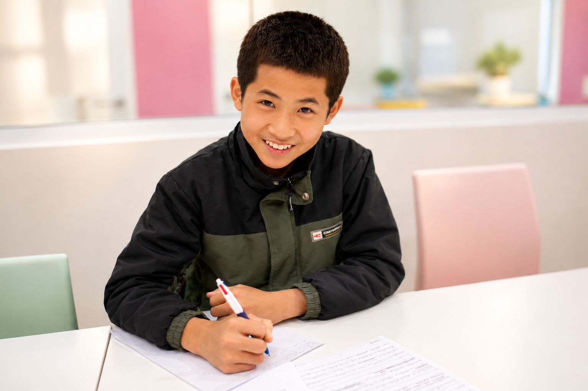
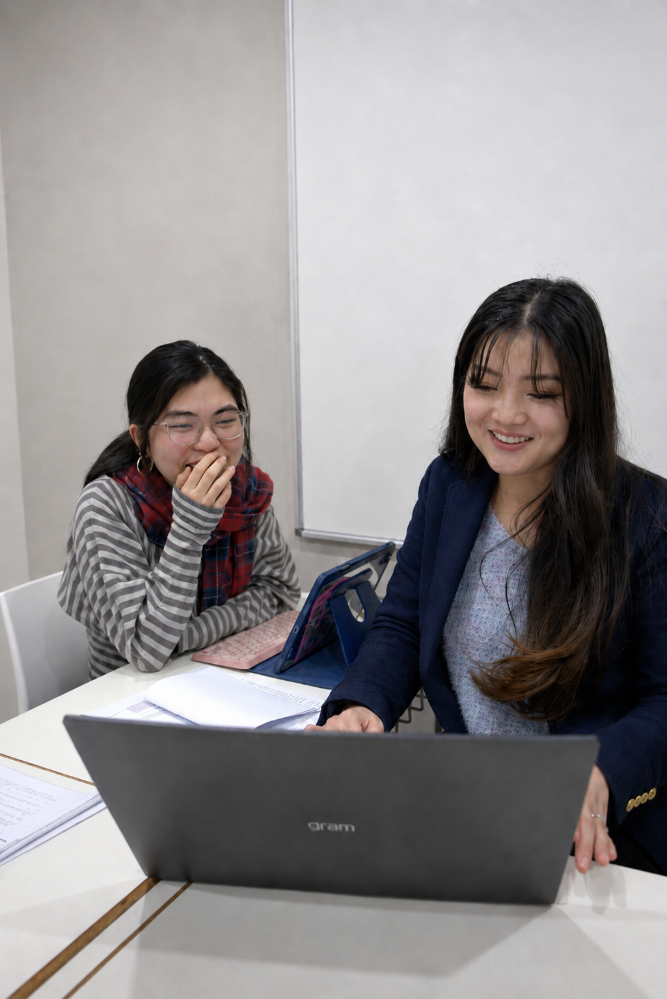

Building high school English skills

- Reading comprehension and inference
- Paragraph structure and clear expression
- Textual analysis and evidence use
- Creative and persuasive writing
- Grammar, vocabulary and assessment habits


See our teaching in action
Before students write, we teach them how to understand exactly what the rubric is asking.
Kooser shows that change can be upsetting. In the opening, “Dawn comes later and later now” suggests that things are changing and the speaker feels that life is not the same as it used to be.
The poem also shows that change affects everyday routines. The speaker says he “could sit with coffee every morning”, which shows he used to have a normal and comforting routine. This suggests that change can interrupt ordinary parts of life.
Kooser also uses imagery to show the difference between the past and the present. The “garden / of trees that grew as if by magic” suggests the past was calm and beautiful, but later “mirrored by darkness” shows that things now feel darker and more uncertain.
The poem also makes change seem difficult through the images of “night in its thick winter jacket” and the “black horse”. These images make change seem harsh and uncomfortable for the speaker.
Overall, Kooser shows that change is hard because it affects routine, changes the way the speaker sees the world, and leaves him feeling unsettled.
valid understanding of the poem, but ideas stay broad
uses quotations, but analysis is mostly descriptive
some relevant technique discussion, but limited depth
focuses on obvious meanings rather than deeper insight
overall judgement is simple and not especially sophisticated
Kooser insightfully portrays change as a disorienting loss of light and connection, as the speaker observes, “Dawn comes later and later now”, using temporal shift to signal a world out of balance and a sense of personal estrangement from what was once familiar.
He reveals how change disrupts the intimacy of daily rituals and erodes meaning, recalling that he “could sit with coffee every morning”, a mundane habit that once anchored him, now replaced by absence, highlighting how change invades the ordinary.
Through delicate natural imagery, Kooser contrasts past harmony with present desolation; the “light step out upon the water” and “a garden of trees that grew as if by magic” evoke a time of beauty and wonder, deepening the ache of what has been lost.
Change is personified as a mysterious, almost malevolent force: “startled by time” and “night in its thick winter jacket” suggest time as an active agent cloaked in cold, while the “black horse with harness” that “creaked like a cricket” introduces menace and inevitability, overturning the calm of “the water garden”.
Ultimately, Kooser presents change as a relentless transformation that isolates the self; the closing lines “And I, who only wished to keep looking out, / must now keep looking in” capture the solitary retreat from the world, where looking in becomes both refuge and resignation.
Explore real examples of the resources and feedback our students receive.

Personalised learning in a smaller-group environment, allowing tutors to focus closely on each student’s individual strengths, areas for improvement and academic goals. Students receive targeted support with assessments, skill development and challenging concepts, with lessons adapted to their pace and learning needs. Ideal for students who benefit from more explanation, greater individual attention and a supportive environment where they can build confidence at their own pace.
Personal mentoring,
not just subject teaching
Care that supports
confidence and
student wellbeing
Skills, mindset and
guidance that extend
beyond school
24-hour support so
students never
feel alone
The lesson stays focused on the subject only.
We guide students academically, personally and emotionally.
Students are often left to manage stress and confusion alone.
Students can reach out for help, clarity and reassurance whenever they need it.
Learning is often limited to the next worksheet, essay or test.
We teach confidence, communication, habits and thinking skills that last beyond the classroom.
Strategies may not reflect what students are truly going through.
Our team has been in their position before and uses tried, proven methods that genuinely work.
Correction is given, but deep care and connection are limited.
We teach with heart and soul, building trust, resilience and long-term growth.